11.22 Improving Visualization Interpretation Using Counterfactuals
论文：Improving Visualization Interpretation Using Counterfactuals
作者：Smiti Kaul, David Borland, Nan Cao, David Gotz
发表：IEEE VIS 2021
复杂高维数据分析被广泛应用于多个领域。然而，对高维数据的分析很容易受到混杂变量的影响，特别是当用户仅应用特定的过滤操作来可视化数据集的某个子集时。因此，对因果关系强弱的错误估计可能会存在于可视数据分析中，并误导用户。这项工作介绍了一种新的可视分析方法，旨在于可视分析过程中，依靠反事实的可能情况（counterfactual possibilities），揭示混杂变量的存在。作者为这种方法实现了可视化原型系统CoFact，帮助用户确定、可视化、分析反事实子集，以更好地支持用户对属性间关系的探索。
作者信息
这篇文章是UNC VACLab（The Visual Analysis and Communication Laboratory）与曹楠老师合作的工作。
Smiti Kaul David Borland David Gotz
最后一位是导师，是Associate Professor，研究兴趣在可视化、人机交互。
一作是组里的硕士生，今年毕业到杜克大学读Public Policy and Economics的博士。
二作是组里的Research Scientist，之前在vis的工作主要是bias相关的（Selection-bias-corrected visualization via dynamic reweighting，Selection bias tracking and detailed subset comparison for high-dimensional data）。
背景
Counterfactual thinking，反事实思维，是一个心理学概念，指人们常会有的思考现实中没有发生的可能性的现象，wiki上的定义“Counterfactual thinking is a concept in psychology that involves the human tendency to create possible alternatives to life events that have already occurred; something that is contrary to what actually happened”。一般有类似“如果我……，那么会……”这样的格式。使用反事实思维去思考因果推理，是常见的应用。已知A发生则B发生，此时再去研究A不发生时B的情况就属于反事实思维。若A不发生则B也不发生，就能够强化分析师对AB间因果关系的判断，反之同样。
在分析高维数据时，用户常常会锁定到两个感兴趣的维度上，使用filter操作，研究两个维度的相关性。
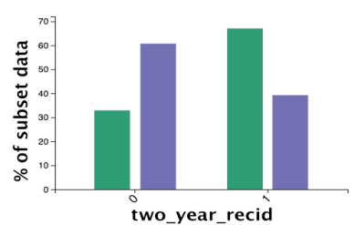
上图中，绿色是过滤出的高暴力犯罪风险人群，紫色是对应的低风险。右边1代表犯罪后两年内再次犯罪的人群，左边0代表两年内未犯罪。可以看到，高暴力犯罪风险的犯罪人群中（绿色），两年内重复犯罪的比例更高。单单从这张图中，可以推测，暴力犯罪风险会影响到重复犯罪几率，且分析师会有比较高的confidence。
然而，这些事件往往是由多个复杂因素共同影响的，其高相关性并不一定具有因果关系。分析者简单的从filter结果以及自身的知识出发得到的结果可能存在问题。作者希望用前面提到的反事实思维来解决这样的问题，帮分析者去分析”不发生“时的情况。
贡献
- 可视分析数据中的”反事实“情况（子集）的方法
- 基于该方法的原型系统，能帮助分析者找到数据中复杂关系带来的影响，改进决策
- 对方法效果的评估
方法
文章研究的数据分析操作：对高维数据，选定一个filter，将数据分成两个部分（满足filter/不满足filter）。之后去观察这两部分的区别（在用户感兴趣的维度上的区别）。
以上面的图片为例，所谓反事实是指研究filter不成立时的情况，即图中紫色的部分。文章希望将紫色的部分进一步细分，得到一个能够用来与绿色部分相比较的子集。
文章提出通过相似度得到反事实子集CF：
IN：满足filter条件
CF：不满足filter条件，但与IN相似
EX：不满足filter条件，且与IN不相似
相似度的计算方法：一条数据与IN中每一条数据的欧式距离的平均值。按照相似度排名，前50%为CF，后50%为EX。
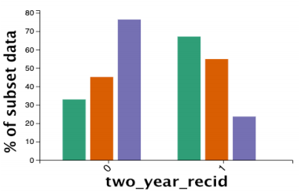
这是上面的例子划分CF后的结果：绿色还是原来的IN，橙色是CF，紫色是新的EX。
能够看到，橙色的CF和绿色的IN分布类似，这表示不满足filter的数据中，与满足的数据最相似的子集（CF），其实和满足的数据在所关心的维度上差不多（分布相似），这表示用来划分数据的filter（暴力犯罪风险）对感兴趣的维度的决定能力不够强，在filter以外的属性中，还存在着其他重要的属性，能对感兴趣的维度产生重大影响。
这种情况文章称之为弱filter。
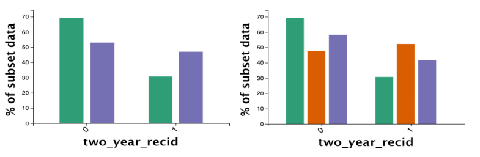
这里选用性别作为filter。能看到，橙色CF与绿色的IN分布不同，说明以性别划分数据之后，两个部分在感兴趣的维度上关联很小，即使最相似的子集CF，其分布也有很大差距。
这种情况称之为强filter。
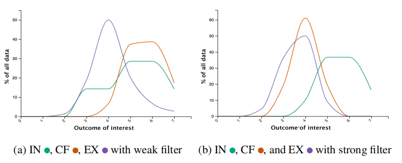
其实文章分析的就是CF与IN间分布的相似程度。
系统设计
三个递进的任务
- R1：选出合适的filter
- R2：理解IN、CF、EX三个子集
- R3：比较不同属性在子集间的差异
系统
系统比较简单，其功能围绕三个任务
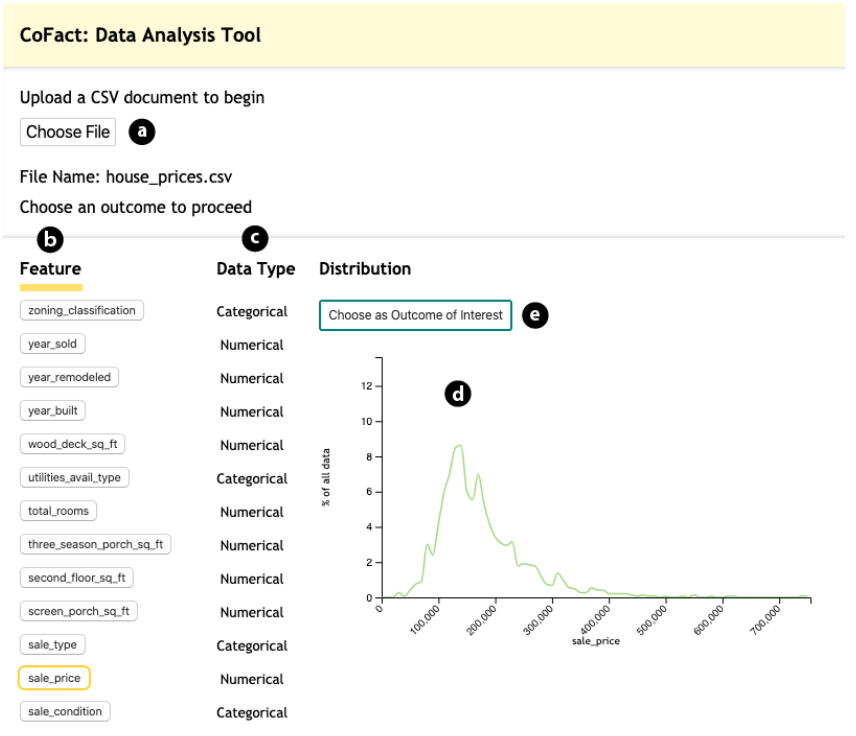
- 加载数据，选择感兴趣的属性，作为比较结果的维度。这里展示了数据在每个维度的分布。
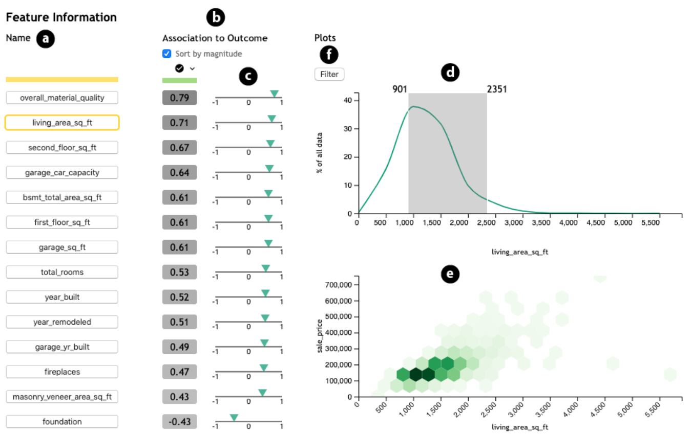
- 研究其他的属性与感兴趣的属性之间的关系，选择一个filter属性，并确定filter的范围。这里的联系就是各种相关性指标，对两个数值型的变量，就是皮尔逊相关性系数。右下角的图是六边形图，文章没有说明作图方式，应该是分布的统计图。
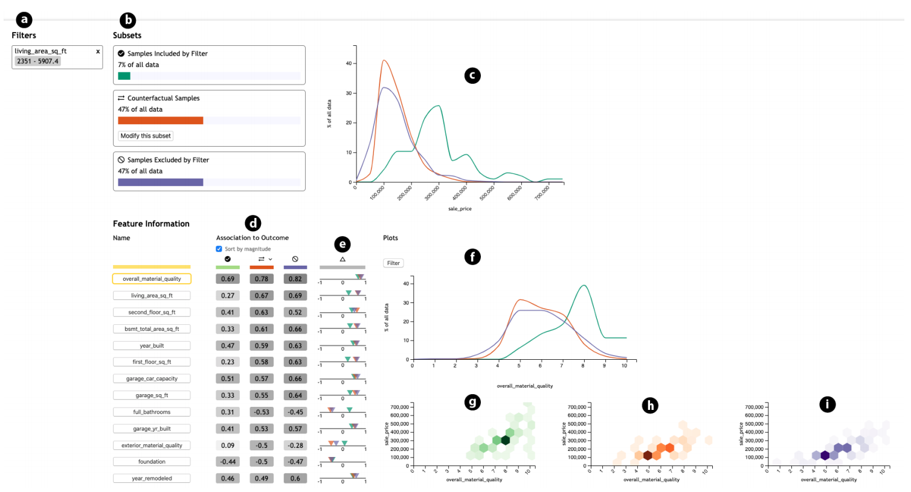
- 选定filter后，最后的展示结果。b：IN、CF、EX的数量，c：感兴趣的维度在三个子集上的分布。d：可以再选择其他维度，研究他们被filter划分后的情况，fghi：选中新的维度后的详细信息。
用户调研
三个假设：
- H1：使用反事实可视分析后，用户对弱filter维度的作用有更低的confidence，对强filter的作用的confidence则更高
- H2：原本未使用反事实可视化的用户，在使用系统之后，对弱和强filter的认识会相应的变化
- H3：新添加的反事实可视化不会干扰用户正常的分析
实验
30名参与者，随机分成两组，各15人，一组作为控制组，只看IN和EX_control，另一组则看全部的IN、CF、EX。
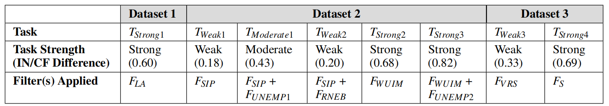
作者提前准备好数据集，并设计好任务。根据IN和CF之间的差异，每个任务被分类为弱、中等、强三档。让参与者自行使用系统完成判断因果关系的任务，记录他们观察到的结果和最终的答案，并让参与者给出对结果的确信程度confidence（按照1到7评分）。之后，控制组的参与者还被要求完成额外的一个弱、一个强的任务来验证H2。
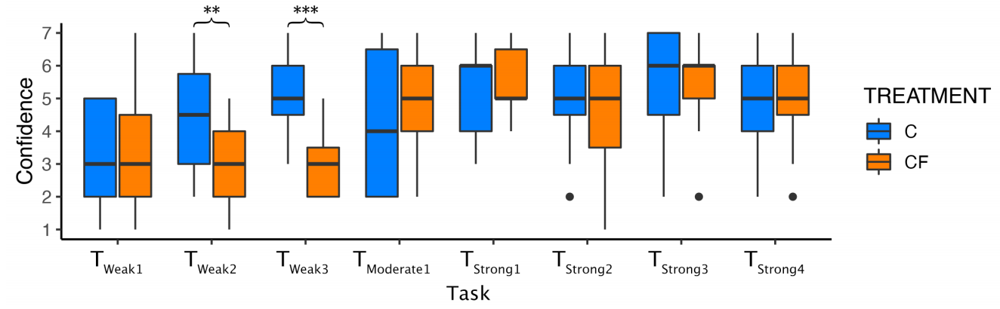
最终的结果证实了H1和H2，而用户访谈的结果证实了H3。
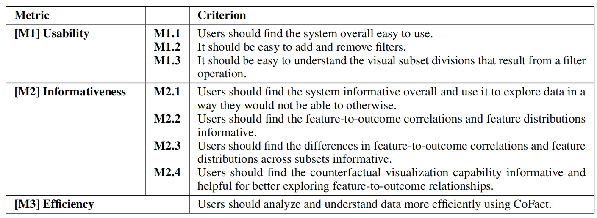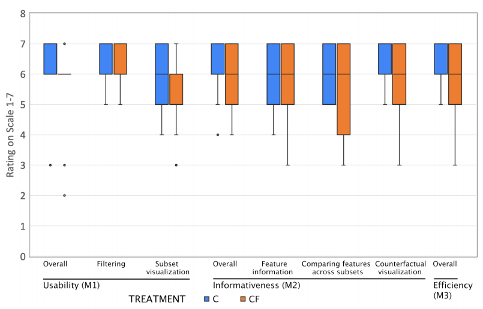
这是文章额外设计的多个评价指标及结果。
文章的evaluation非常全面用心，除了任务相关的结果，还有用户使用系统时的各种评定指标（可用性等）。文章还为其任务专门设计了强度划分的标准，写在了方法章节，为evaluation服务。
讨论
这种相似度计算方法只能看出线性的相关关系，对复杂的情况无能为力。
回过头来看文章标题的interpretation，指的应该是引入反事实后，对所谓的混杂变量的发现。
文章evaluation做的很充分，有专门设计的任务、评价指标。
✉️ wzlzju@zju.edu.cn